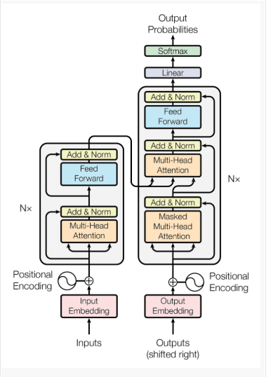

Transformer Architecture#
The Transformer is a deep learning architecture introduced by Vaswani et al. in “Attention Is All You Need” (2017). It completely replaces recurrence (RNNs) and convolution (CNNs) with a mechanism called Self-Attention, making it highly parallel, scalable, and efficient for sequence processing (e.g., text, audio, code).
Why Transformers#
Before Transformers:
RNNs / LSTMs processed data sequentially, so training couldn’t be parallelized.
Long sequences led to vanishing gradients and loss of long-term context.
CNNs handled local dependencies well but struggled with long-range relationships.
Transformers solve all of this using attention, which allows the model to directly relate any two positions in a sequence — regardless of their distance.
Core Idea#
Instead of processing sequences step-by-step, the Transformer looks at the entire sequence at once and decides which parts are important for understanding each word or token.
This is done using self-attention.
Architecture Overview#
The Transformer follows an Encoder–Decoder structure:
Input Sequence ──► Encoder Stack ──► Context Representation ──► Decoder Stack ──► Output Sequence
Each Encoder and Decoder is made of N = 6 identical layers (in the original paper).
#
Encoder Structure#
Each encoder layer has two main sub-layers:
Multi-Head Self-Attention
Allows each token to “look at” every other token in the sequence and learn relationships.
Example: In “The cat sat on the mat,” the model can learn that “cat” relates strongly to “sat”.
Feed-Forward Neural Network (FFN)
Applies a position-wise fully connected network to each token representation.
Each sub-layer has a residual connection followed by Layer Normalization:

Decoder Structure#
Each decoder layer has three sub-layers:
Masked Multi-Head Self-Attention
Similar to encoder self-attention, but uses masking so a token can only attend to previous tokens.
This preserves the autoregressive property (no “peeking ahead”).
Encoder–Decoder Attention
Allows the decoder to attend to encoder outputs — i.e., focus on relevant parts of the input sequence.
Feed-Forward Neural Network (FFN)
Same as encoder FFN.
Again, residual connections and layer normalization are applied after each sub-layer.
 #
#
The Self-Attention Mechanism#
Self-Attention computes a weighted combination of token representations based on query (Q), key (K), and value (V) matrices.
Given: $\( Q = XW_Q,\quad K = XW_K,\quad V = XW_V \)$ where ( X ) is the input sequence embedding matrix.
Then: $\( \text{Attention}(Q, K, V) = \text{softmax}!\left(\frac{QK^T}{\sqrt{d_k}}\right)V \)$
Key Intuition:
\(QK^T\) gives similarity scores between tokens.
The softmax turns these scores into attention weights.
The model then takes a weighted sum of all token representations (( V )) to produce context-aware outputs.
Multi-Head Attention#
Rather than performing one attention calculation, Transformers use multiple attention heads in parallel.
Each head focuses on different relationships (e.g., grammar, context, position).
The outputs of all heads are concatenated and linearly projected: $\( \text{MultiHead}(Q,K,V) = \text{Concat}(\text{head}_1, ..., \text{head}_h)W_O \)\( where each head (\)i = \text{Attention}(QW_i^Q, KW_i^K, VW_i^V)$.
Positional Encoding#
Since the Transformer has no recurrence, it needs to know token order.
A positional encoding is added to the input embeddings: $\( PE_{(pos, 2i)} = \sin!\left(\frac{pos}{10000^{2i/d_{model}}}\right), \quad PE_{(pos, 2i+1)} = \cos!\left(\frac{pos}{10000^{2i/d_{model}}}\right) \)$
These sinusoidal patterns allow the model to infer both absolute and relative positions of tokens.
Feed-Forward Network (FFN)#
Each token is independently passed through: $\( \text{FFN}(x) = \max(0, xW_1 + b_1)W_2 + b_2 \)$
It provides non-linearity and helps mix information within each token representation.
Residual Connection + Layer Normalization#
Each sub-layer output is:
This stabilizes training and helps gradient flow through deep networks (solving vanishing gradient problems).
Training and Objective#
Transformers are trained to predict the next token (autoregressive training) using cross-entropy loss: $\( L = -\sum_{t} \log P(y_t | y_{<t}, x) \)$
Advantages#
Aspect |
Transformer |
RNN/LSTM |
|---|---|---|
Parallelization |
Fully parallel |
Sequential |
Long-range context |
Excellent |
Weak |
Training speed |
Fast (GPU-optimized) |
Slow |
Interpretability |
Attention maps interpretable |
Hard to visualize |
Variants of Transformers#
Model |
Type |
Application |
|---|---|---|
BERT |
Encoder-only |
Text understanding (classification, QA) |
GPT |
Decoder-only |
Text generation |
T5 / BART |
Encoder–Decoder |
Text-to-text tasks (translation, summarization) |
Vision Transformer (ViT) |
Encoder-only |
Image classification |
Perceiver / AudioLM |
Multimodal |
Audio, video, text fusion |
Intuitive Analogy#
Think of attention as a “spotlight” in a text:
When the model reads a word like “bank,” it scans the whole sentence (“river bank” vs “money bank”) to find which context is most relevant.
The attention mechanism lets it focus on the right context dynamically.
Summary
Component |
Function |
|---|---|
Embedding + Positional Encoding |
Represent tokens and their positions |
Self-Attention |
Capture relationships between tokens |
Multi-Head Attention |
Look at multiple relationships in parallel |
Feed-Forward Network |
Nonlinear transformation for each token |
Residual + LayerNorm |
Stabilize and speed up training |
Encoder–Decoder |
Map input sequence to output sequence |
In short, Transformers revolutionized deep learning by removing recurrence and convolution entirely, replacing them with attention mechanisms that enable massive parallelization and long-context understanding — the foundation of models like BERT, GPT, and T5.
Encoder-Only Architecture#
What it is
Uses only the Transformer encoder stack
Learns bidirectional context (looks left and right)
How it works
Self-attention attends to all tokens simultaneously
No masking
Produces contextual embeddings for each token
Best suited for
Understanding tasks (not generation)
Typical tasks
Text classification
Sentiment analysis
Named Entity Recognition (NER)
Semantic similarity
Embeddings generation
Examples
BERT
RoBERTa
DistilBERT
ALBERT
Key limitation
Cannot generate text autoregressively
Decoder-Only Architecture#
What it is
Uses only the Transformer decoder stack
Designed for autoregressive generation
How it works
Uses causal (masked) self-attention
Each token can attend only to previous tokens
Generates text token by token
Best suited for
Text generation and reasoning
Typical tasks
Chatbots
Code generation
Story writing
Math reasoning
SQL generation
Examples
GPT-2 / GPT-3 / GPT-4
LLaMA
Mistral
Falcon
Key limitation
Weaker at pure “understanding” tasks compared to encoder models
3. Encoder–Decoder Architecture (Seq2Seq)#
What it is
Combines encoder + decoder
Encoder understands input
Decoder generates output conditioned on encoder output
How it works
Encoder builds contextual representation of input
Decoder uses:
Masked self-attention
Cross-attention over encoder outputs
Best suited for
Input → Output transformation tasks
Typical tasks
Machine translation
Summarization
Question answering
Text rewriting
Speech-to-text
Examples
T5
BART
Marian
FLAN-T5
Key limitation
Heavier and slower than decoder-only for chat use cases
Side-by-Side Comparison (Interview Table)
Aspect |
Encoder-Only |
Decoder-Only |
Encoder–Decoder |
|---|---|---|---|
Context |
Bidirectional |
Unidirectional |
Bidirectional (encoder) |
Masking |
No |
Causal |
Encoder: No, Decoder: Yes |
Text Generation |
❌ |
✅ |
✅ |
Understanding Tasks |
✅ Excellent |
⚠️ Moderate |
✅ Excellent |
Cross-Attention |
❌ |
❌ |
✅ |
Architecture Size |
Medium |
Large |
Largest |
Latency |
Low |
Medium |
High |
Common Use |
Classification |
Chat / Code |
Translation / Summarization |